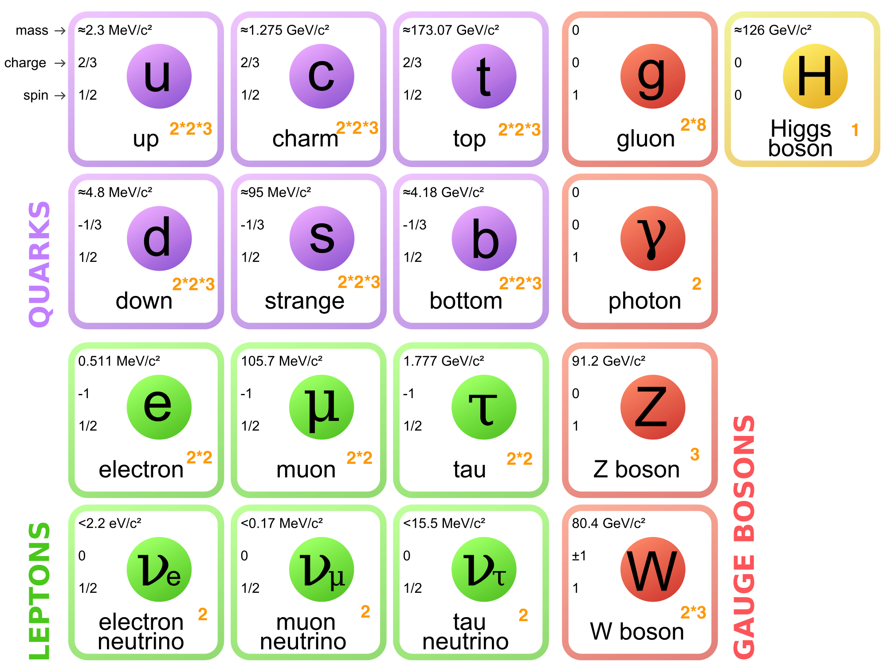
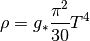
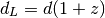
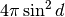
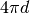
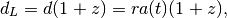
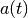
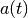
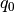
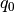

Cosmology¶
Thermal History of The Universe¶
Review of Standard Model for Particle Physics¶
- SM of particle physics
- describes elementary particles and their interactions.
- is well test with experiments.
Degree of Freedom of Elementary Particles¶
{kind=link}
IMG Source: https://en.wikipedia.org/wiki/File:Standard_Model_of_Elementary_Particles.svg
{kind=link}
The orange numbers at the right bottom of each particle is the degrees of freedom it has. Here are some comments.
- Photons have only two DoF because it is mass 0. Same reason can apply to gluon. But according to symmetry, there are 8 kinds of gluons.
- W bosons carry charges. This is where the 2 come from.
- Electrons and quarks have antiparticles. So there DoF will be doubled after counting the spin.
- Each quark have 3 different colors and this gives us the 3 when calculating there DoF.
Finally, we can make this table.
| Partilces | Higgs | Messengers | Quarks | Leptons |
|---|---|---|---|---|
| DoF | 1 | 27 | 72 | 18 |
Expansion and Temperature¶
We can see that the heaviest particle is top quark with a mass of  .
.
Temperature Greater Than Mass of Top Quark¶
If temperature of the universe  , all particles should be in relativistic regime and the decay (annihilation) and inverse decay (inverse annihilation) are in equilibrium so all particles contribute to the thermal quantities in a relativistic way.
, all particles should be in relativistic regime and the decay (annihilation) and inverse decay (inverse annihilation) are in equilibrium so all particles contribute to the thermal quantities in a relativistic way.

Then

For convinience, define the following reduced Planck mass

And it’s good to know its value, which is  .
.
We would like to know the relation between expansion and temperature. We already know that the energy density is

So the expansion is

So Hubble function is

Temperature Down to Mass of A Particle¶
As temperature drops down, particle dacay (annihilation) will be greater than its inverse which is suppressed by Boltzmann factor  . The decay rate is so quick that the particle will almost dispear before the universe expand a lot.
. The decay rate is so quick that the particle will almost dispear before the universe expand a lot.
So when the temperature drops below the mass of a particle, it won’t contribute to the energy density. Their DoF will just dispear.
For example, if  , Higgs and W and Z will decay and quarks are combined with gluons. So we only have photons, electrons, neutrinos as elementary particles, that is
, Higgs and W and Z will decay and quarks are combined with gluons. So we only have photons, electrons, neutrinos as elementary particles, that is  .
.
The Hubble function,

Decay Rate VS Expansion Rate¶
We can generally prove that decay rate is much faster than the expansion rate. ............... To be added.
Two Parameters¶
Why is Cosmology Dedicated to Finding Two Parameters Before 90’s
Basically, the cosmology before the 90’s have only two tasks. The first one is to find out the Hubble constant, while the second one is looking for the deceleration parameter.
We don’t rush to define what Hubble constant and deceleration parameter are, but have a look at what observations do at that time.
Observations¶
Astronomers are really good at measuring distances. They have infinite tricky ways to find out some distance.
Luminosity Distance¶
Luminosity Distance from Observation¶
We can find out how bright a star is by observation. One way to represent the brightness is to use the energy crossed per unit area per unit time at the observer, because this is what our eyes do.
This quantity is related to how much energy was emitted at the star, how far we are from the star. The more energy the star emitted, the brighter it look like. The nearer the star is, the brighter it is. Just like what we feel like with a candle.
This schematic picture shows that energy spread out on a surface because the total energy is conserved. Isotropic energy flux through the same solid angle at different radius must be the same.

Through a very simple calculation, it is as simple as

We are dealing with Cosmology now. The space-time manifold should be a great concern. The luminosity turns out to be

Here d is the physical distance between the star and the observer. L is the absolute luminosity of the star, which stands for the power of the star. z is the redshift of the star.
The first  term comes from the fact that the energy of each photon decrease due to expansion of the universe, while the second is the result that the rate of photons arrived at the observer is less.
term comes from the fact that the energy of each photon decrease due to expansion of the universe, while the second is the result that the rate of photons arrived at the observer is less.
We are happy to define

then the luminosity becomes simpler,

Now we come back to have a look at this luminosity.
- We can measure how much energy is passing through a unit area at a unit time, which means we can determine this luminosity directly from observations.
- We can predict the absolute luminosity from a star evolution model.
- The
 is only valid for a flat universe, with curvature term
is only valid for a flat universe, with curvature term  in Friedmann equation.
in Friedmann equation.
Then we can find out this so called luminosity distance

from some data.
Luminosity Distance from Theory¶
We don’t just do the observation for the luminosity distance itself. We observe to test theories.
What is this distance in theory?

Wait, didn’t we just mention that this is only valid for a flat universe? So we just do some extension.

where R(d) is a function of d and can be determined through geometry,
- Spherical:  ,
- Flat:  ,
- Hyperbolic:
 .
.
Nearby Objects¶
For nearby objects, we can always use flat geometry and use Taylor expansion at current time for a(t).
Luminosity distance is

where r is the comoving distance and a(t) is the scale factor at time t.
We know

So we are happy to use Taylor expansion around  for , and keep only up to the second order of time. And do some substitution with
for , and keep only up to the second order of time. And do some substitution with

We then do the same thing on redshift

Finally, we can find out the relation  , which leads us to the result we need,
, which leads us to the result we need,  .
.
For very near objects (not as near as our sun of course),

This is a model independent observation and derivation. We can draw a line to represent the case when deceleration parameter is zero, lines higher than this stands for a accelerating universe while lower region show a decelerating universe.

We can show that for a vacuum energy dominated universe, the line would go up and for a matter dominated universe, it would below the zero deceleration line.
Comment¶
In this model independent method, the only two parameters occur are Hubble constant  and deceleration parameter  .
and deceleration parameter  .
Angular Diameter Distance¶
Observation¶
Angular diameter distance is really useful if we have some standard ruler. Now assume we have a ruler d, we can find out the angle between the two ends of the ruler, by some kind of measurement.

At the same time, we can use magic of math

Now as we already find out what  is by a measurement, and we said about the d is a standard ruler, which means we know the length of it very well. Then we can find out the distance
is by a measurement, and we said about the d is a standard ruler, which means we know the length of it very well. Then we can find out the distance  , which is the distance between us and the standard ruler.
, which is the distance between us and the standard ruler.
Theory¶
We can find out this kind of distance, which we will denote it as  from now on. What is it for?
from now on. What is it for?
A angular diameter distance is the physical distance between us and the standard ruler,

We can use the same trick we used in luminosity distance calculations, and it is easy to find that

Again, the observation is related to only two parameters, Hubble constant and deceleration parameter .
Standard Rulers¶
It is hard to imagine that we really have some standard rulers. In fact, we do. They are
- Baryon Acoustic Oscillation
- Sound Horizon at Recombination
Galaxy Number Count¶
Now we can see anything that is only (simply) related to physical or comoving distance can be determined by this trick. The result is that only two cosmological parameters would come in our equation as long as we keep only upper to order two of redshift.
Here another example is the galaxy number count.